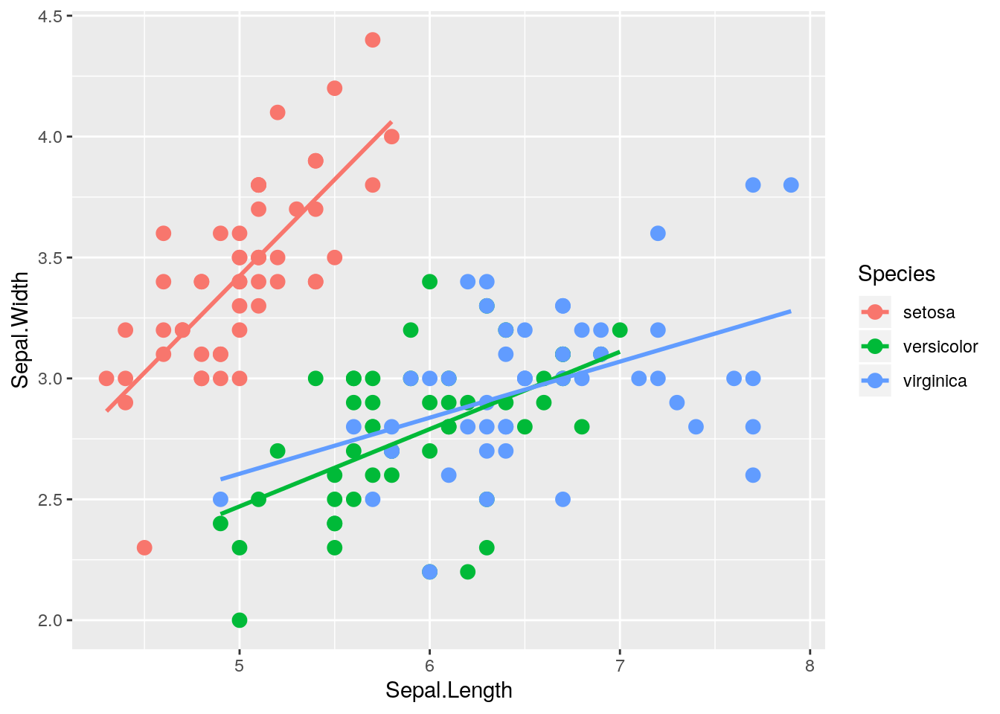
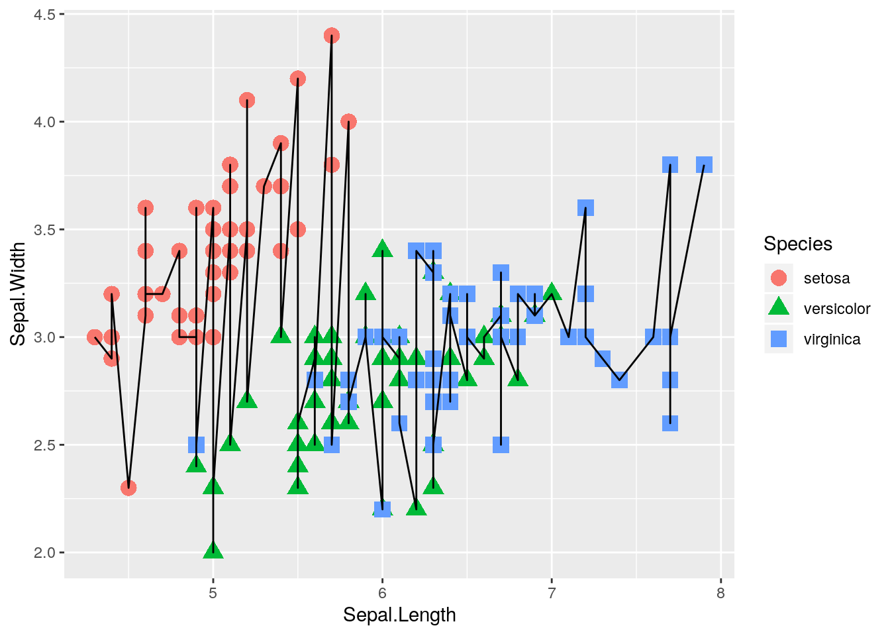

Chapter 7 Scatter Plots
Begin by considering a simple and classic data set sometimes called Fisher’s Iris Data. These data are available in R.
data(iris)
str(iris)## 'data.frame': 150 obs. of 5 variables:
## $ Sepal.Length: num 5.1 4.9 4.7 4.6 5 5.4 4.6 5 4.4 4.9 ...
## $ Sepal.Width : num 3.5 3 3.2 3.1 3.6 3.9 3.4 3.4 2.9 3.1 ...
## $ Petal.Length: num 1.4 1.4 1.3 1.5 1.4 1.7 1.4 1.5 1.4 1.5 ...
## $ Petal.Width : num 0.2 0.2 0.2 0.2 0.2 0.4 0.3 0.2 0.2 0.1 ...
## $ Species : Factor w/ 3 levels "setosa","versicolor",..: 1 1 1 1 1 1 1 1 1 1 ...The data contain measurements on petal and sepal length and width for dim(iris)[1] iris plants. The plants are from one of three species, and the species information is also included in the data frame. The data are commonly used to test classification methods, where the goal would be to correctly determine the species based on the four length and width measurements. To get a preliminary sense of how this might work, we can draw some scatter plots of length versus width. In graphics, making scatter plots is simple:
plot(x = iris$Sepal.Length, y = iris$Sepal.Width)
We see the plot() function by default creates a basic scatterplot when we supply the function with values for the x and y arguments.
Looking at the scatter plot and thinking about the focus of finding a method to classify the species, two thoughts come to mind. First, the plot might be improved by shading in the points. And second, using different colors for the points corresponding to the three species would help.
plot(x = iris$Sepal.Length, y = iris$Sepal.Width, pch = 19, col = iris$Species)
The pch = argument is used to control the type of symbol used to represent the data points. pch = 19 specifies a filled in circle for each data point. You can mess around with different numbers and you’ll see a wide variety of options. The col = iris$Species argument tells the plot() function to assign a different color to each unique value in the the iris$Species vector.1 Notice however that there is no legend produced by default, so we don’t know which color represents each species. We can add a legend using the legend() function.
plot(x = iris$Sepal.Length, y = iris$Sepal.Width, pch = 19, col = iris$Species)
legend(x = 6.4, y = 4.4, legend = levels(iris$Species),
col = 1:length(levels(iris$Species)), pch = 19)Let’s walk through the additional complexities one at a time:
x = 6.4, y = 4.4specifies the location where the legend is drawn. Here I place it in a location where the box will not cover up any data points.legend = levels(iris$Species)specifies the names of the different categories that will appear in the legend.col = 1:length(levels(iris$Species))specifies the number of colors that are represented in the function. In this case, we uselength(levels(iris$Species))to get the number of unique species in the data set, which turns out to be 3.pch = 19specifies the type of symbol to include in the legend.
It may seem like there are a lot of arguments to specify to produce a legend and a simple scatter plot, but this also means we have a lot of control over the graph, which is very useful when you are trying to develop a publication-quality figure for your own work.
Now perhaps we want to use different shapes as well for the different species. To do this we assign different values for the pch argument to each species, and subsequently change the pch argument in the legend as well.
plot(x = iris$Sepal.Length, y = iris$Sepal.Width, pch = c(17, 18, 19)[iris$Species], col = iris$Species)
legend(x = 6.4, y = 4.4, legend = levels(iris$Species),
col = 1:length(levels(iris$Species)), pch = c(17, 18, 19))7.0.1 Adding lines to a scatter plot
Next let’s add a fitted least squares line to the scatter plot. This can be done pretty easily using the abline() function to add a straight ine to the curve, and the lm() function to actually compute the least squares line
plot(x = iris$Sepal.Length, y = iris$Sepal.Width, pch = c(17, 18, 19)[iris$Species], col = iris$Species)
legend(x = 6.4, y = 4.4, legend = levels(iris$Species),
col = 1:length(levels(iris$Species)), pch = c(17, 18, 19))
abline(lm(iris$Sepal.Width ~ iris$Sepal.Length))
For the iris data, it probably makes more sense to fit separate lines by species. Below we compute the linear model separately for each species, then use the abline() function to add each line to the graph. Note our use of logical subsetting to obtain separate data frames for each species.
iris.setosa <- iris[iris$Species == "setosa", ]
iris.versicolor <- iris[iris$Species == "versicolor", ]
iris.virginica <- iris[iris$Species == "virginica", ]
plot(x = iris$Sepal.Length, y = iris$Sepal.Width, pch = c(17, 18, 19)[iris$Species], col = iris$Species)
legend(x = 6.4, y = 4.4, legend = levels(iris$Species),
col = 1:length(levels(iris$Species)), pch = c(17, 18, 19))
abline(lm(iris.setosa$Sepal.Width ~ iris.setosa$Sepal.Length), col = 1)
abline(lm(iris.versicolor$Sepal.Width ~ iris.versicolor$Sepal.Length), col = 2)
abline(lm(iris.virginica$Sepal.Width ~ iris.virginica$Sepal.Length), col = 3)Note that we could also do this using a for loop, which you will learn about soon in Chapter 9.
iris.setosa <- iris[iris$Species == "setosa", ]
iris.versicolor <- iris[iris$Species == "versicolor", ]
iris.virginica <- iris[iris$Species == "virginica", ]
plot(x = iris$Sepal.Length, y = iris$Sepal.Width, pch = c(17, 18, 19)[iris$Species], col = iris$Species)
legend(x = 6.4, y = 4.4, legend = levels(iris$Species),
col = 1:length(levels(iris$Species)), pch = c(17, 18, 19))
for (i in 1:length(levels(iris$Species))) {
curr.species <- iris[iris$Species == levels(iris$Species)[i], ]
abline(lm(curr.species$Sepal.Width ~ curr.species$Sepal.Length), col = i)
}
Another common use of line segments in a graphic is to connect the points in order. Although it is not clear why this helps in understanding the iris data, the technique is illustrated next. First we connect all lines regardless of species. This is done easily by specifying the argument type = 'b' in the plot() function2
plot(x = iris$Sepal.Length, y = iris$Sepal.Width, pch = c(17, 18, 19)[iris$Species], col = iris$Species, type = 'b')
legend(x = 6.4, y = 4.4, legend = levels(iris$Species),
col = 1:length(levels(iris$Species)), pch = c(17, 18, 19))
Now we attempt to only connect the points within a given species. Doing this requires the use of the lines() function to draw three separate lines for each species3 First we create a plot for the first species, and then subsequently use the lines() function to add each of the remaining two species to the plot. Notice that there are some additional arguments in the original plot() function that we have yet to cover. Don’t worry, we’ll talk about all this fun stuff in the next section :)
plot(x = iris$Sepal.Length[iris$Species == "setosa"], y = iris$Sepal.Width[iris$Species == "setosa"], pch = 17, col = 1, type = 'b', xlim = range(iris$Sepal.Length), ylim = range(iris$Sepal.Width), xlab = "Sepal Length", ylab = "Sepal Width")
lines(x = iris$Sepal.Length[iris$Species == "versicolor"], y = iris$Sepal.Width[iris$Species == "versicolor"], pch = 18, col = 2, type = 'b')
lines(x = iris$Sepal.Length[iris$Species == "virginica"], y = iris$Sepal.Width[iris$Species == "virginica"], pch = 19, col = 3, type = 'b')
legend(x = 6.4, y = 4.4, legend = levels(iris$Species),
col = 1:length(levels(iris$Species)), pch = c(17, 18, 19))
7.1 Labels, Axes, Text, etc.
The default settings of graphics often produce useful graphics, but once a graphic is chosen for dissemination, the user will likely want to customize things like the title, axes, etc. In this section some tools for customization are presented. Most will be illustrated in the context of a data set on crime rates in the 50 states in the United States. These data were made available by Nathan Yau at http://flowingdata.com/2010/11/23/how-to-make-bubble-charts/. The data include crime rates per 100,000 people for various crimes such as murder and robbery, and also include each state’s population. The crime rates are from the year 2005, while the population numbers are from the year 2008, but the difference in population between the years is not great, and the exact population is not particularly important for what we’ll do below.
First, read in the data, examine its structure, and produce a simple scatter plot of motor vehicle theft versus burglary.
u.crime <- "http://blue.for.msu.edu/FOR875/data/crimeRatesByState2005.csv"
crime <- read.csv(u.crime, header=TRUE)
str(crime)## 'data.frame': 50 obs. of 9 variables:
## $ state : Factor w/ 50 levels "Alabama ","Alaska ",..: 1 2 3 4 5 6 7 8 9 10 ...
## $ murder : num 8.2 4.8 7.5 6.7 6.9 3.7 2.9 4.4 5 6.2 ...
## $ Forcible_rate : num 34.3 81.1 33.8 42.9 26 43.4 20 44.7 37.1 23.6 ...
## $ Robbery : num 141.4 80.9 144.4 91.1 176.1 ...
## $ aggravated_assult : num 248 465 327 387 317 ...
## $ burglary : num 954 622 948 1085 693 ...
## $ larceny_theft : num 2650 2599 2965 2711 1916 ...
## $ motor_vehicle_theft: num 288 391 924 262 713 ...
## $ population : int 4627851 686293 6500180 2855390 36756666 4861515 3501252 873092 18328340 9685744 ...plot(crime$burglary, crime$motor_vehicle_theft, pch = 19)7.1.1 Labels
By default, axis labels are the values of the x and y values you supply to the plot() function. For making a publication-quality figure, we often want to further customize these labels, as well as potentially add a title to the graph. We can do this using the xlab, ylab, and main arguments in the plot() function.
plot(crime$burglary, crime$motor_vehicle_theft, pch = 19,
xlab = "Burglaries per 100,000 population",
ylab = "Motor vehicle theft per 100,000 population",
main = "Burglaries vs motor vehicle theft for US states")
Perhaps it may be easier to read the values on the y-axis if they were oritented horizontally instead of vertically. We can do this using the las = 1 argument.
plot(crime$burglary, crime$motor_vehicle_theft, pch = 19,
xlab = "Burglaries per 100,000 population",
ylab = "Motor vehicle theft per 100,000 population",
main = "Burglaries vs motor vehicle theft for US states",
las = 1)
7.2 Customizing Axes
The basic plot() function provides defaults for the axis limits, as well as for other axis features (i.e., the box around the plot). These, and other axis features such as tick marks, labels, and transformations, can all be customized. First, we use the xlim and ylim arguments to make the x and y axes start at zero and go to the maxium x and y values.
plot(crime$burglary, crime$motor_vehicle_theft, pch = 19,
xlab = "Burglaries per 100,000 population",
ylab = "Motor vehicle theft per 100,000 population",
main = "Burglaries vs motor vehicle theft for US states",
las = 1, xlim = c(0, max(crime$burglary)),
ylim = c(0, max(crime$motor_vehicle_theft)))
Now we eliminate the axes and box automatically drawn by the plot() function, and subsequently add our own axes using the axis() function. We use most of the defaults provided by the axis() function, however, looking at the help page for axis() reveals a large amount of possibilities for customizing the axes in whatever way you desire.
plot(crime$burglary, crime$motor_vehicle_theft, pch = 19,
xlab = "Burglaries per 100,000 population",
ylab = "Motor vehicle theft per 100,000 population",
main = "Burglaries vs motor vehicle theft for US states",
las = 1, axes = FALSE,
xlim = c(0, max(crime$burglary)),
ylim = c(0, max(crime$motor_vehicle_theft)))
axis(side = 1)
axis(side = 2, las = 1)7.2.1 Text, Point Size, and Color
Next we make point size proportional to population, change the color, and add a state label. First we make point size proportional to population size using the symbols() function. We can control the color of the points using the bg argument in the symbols() function. We then use the text() function to add labels to each point.
symbols(crime$burglary, crime$motor_vehicle_theft, pch = 19,
xlab = "Burglaries per 100,000 population",
ylab = "Motor vehicle theft per 100,000 population",
main = "Burglaries vs motor vehicle theft for US states",
las = 1,
xlim = c(0, max(crime$burglary)),
ylim = c(0, max(crime$motor_vehicle_theft)),
circles = crime$population,
inches = 1/5, axes = FALSE, bg="steelblue2")
axis(side = 1)
axis(side = 2, las = 1)
text(crime$burglary, crime$motor_vehicle_theft, labels=crime$state, cex=0.9, font=2)This graph is mind-numbingly busy, and is missing some notable things (i.e. legend). For now, we leave it up to you to add in a legend, make the graph less cluttered, fix the cutoff labels, etc. if you so desire.
7.3 Other Types of Graphics
Scatter and line plots, which have just been presented, are common but certainly not the only graphical displays in common use. Histograms, boxplots, and bar graphs, as well as more “mathematical” displays such as the graph of a function, are commonly used to represent data. Examples of each are presented below.
7.3.1 Histograms
Simon Newcomb conducted several experiments to estimate the speed of light by measuring the time it took for light to travel from his laboratory to a mirror at the base of the Washington Monument, and then back to his lab. This is a distance of \(7.44373\) km, and by dividing this distance by the measured time, an estimate for the speed of light is obtained.
The times are of course quite small, and to avoid working with very small numbers, the data are recoded to be the deviation from \(24800\) nanoseconds. For example an observation coded as \(28\) represents a time of \(24828\) nanoseconds, while an observation coded as \(-44\) represents a time of \(24756\) nanoseconds.
u.newcomb <- "http://blue.for.msu.edu/FOR875/data/Newcomb.csv"
Newcomb <- read.csv(u.newcomb, header=TRUE)
head(Newcomb)## Time
## 1 28
## 2 26
## 3 33
## 4 24
## 5 34
## 6 -44To produce a simple histogram of these data in the graphics package, we can use the simple hist() function.
hist(Newcomb$Time)
The function automatically specifies the binwidths for the data, however we can easily change this ourselves to something more suitable using the breaks argument. We also change the axis labels, y-axis label orientation, title, and color of the bins.
hist(Newcomb$Time, breaks = 30, main = "Histogram", xlab = "Time", las = 1, col = 'blue')7.3.2 Boxplots
Next we consider some data from the gap minder data set to construct some box plots. These data are available in the gapminder package, which might need to be installed via install.packages("gapminder").
library(gapminder)## Warning: package 'gapminder' was built under R version 3.4.2boxplot(gdpPercap ~ continent, data = subset(gapminder, year == 2002), pch = 19, col = 'lightblue', las = 1, xlab = "Continent", ylab = "GDP Per-capita")
Here’s the same set of boxplots, but with different colors and the boxes plotted horizontally rather than vertically
boxplot(gdpPercap ~ continent, data = subset(gapminder, year == 2002), pch = 19, border = 'red', col = 'lightblue', las = 1, xlab = "GDP Per-Capita", ylab = "Continent", horizontal = TRUE)
To see the order in which R assigns colors to different values, run the
palette()function↩The “b” stands for “both”. By default, the
typeargument is set to “p” for “points”. You can also specify that you only want lines usingtype = 'l'.↩Note that we could again perhaps simplify this by using a
forloop, but we’ll restrain ourselves until we learn aboutforloops in Chapter 9.↩